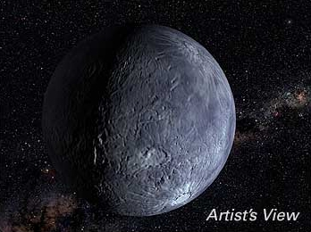

Kuiper Belt Objects (KBOs), members of the Trans-Neptunian objects, are ice-rock bodies that inhabit the outer Solar System in the Kuiper Belt. Formed at the same time as the rest of the Solar System and beyond the orbit of Neptune, these objects are thought to have either formed in place or were pushed out to their present position by Neptune’s migration.
Although their surfaces have been modified by radiation and collisions, it is expected that their interiors should contain pristine material from the early Solar System. This is a similar situation to what we find with cometary nuclei, and we now believe that Jupiter-family short period comets originate in the Kuiper Belt.

Credit: NASA/G. Bacon (STScI) and M. Brown (Caltech)
KBOs are divided into three main classes:
- Classical KBOs typically have semi-major axes between about 42 and 48 AU and form the majority of objects detected so far in the Kuiper Belt. They typically have orbits of low eccentricity and inclination, suggesting that their orbits have not changed significantly since they condensed out of the solar nebula.
- Resonance KBOs inhabit one of the mean motion resonances with Neptune. The most populated is the 3:2 resonance, which contains Pluto and almost 25% of the detected KBOs (for obvious reasons called plutinos). The name of the resonance indicates that these objects complete 2 orbits around the Sun for every 3 orbits of Neptune.
- Scattered KBOs (scattered disk objects) have perihelia which lie within the Kuiper Belt (between about 30 and 48 AU), but they also have large orbital eccentricities. This means that their aphelia are located at distances greater than 60 AU, and that they spend only a very small fraction of their time close enough to the Sun to be detected by current observational surveys. For this reason only a small number of scattered KBOs are known.
While the majority KBOs will most likely remain in the Kuiper Belt, others can be perturbed inwards to later be ejected from the Solar System or to become centaur asteroids or Jupiter-type short-period comets.